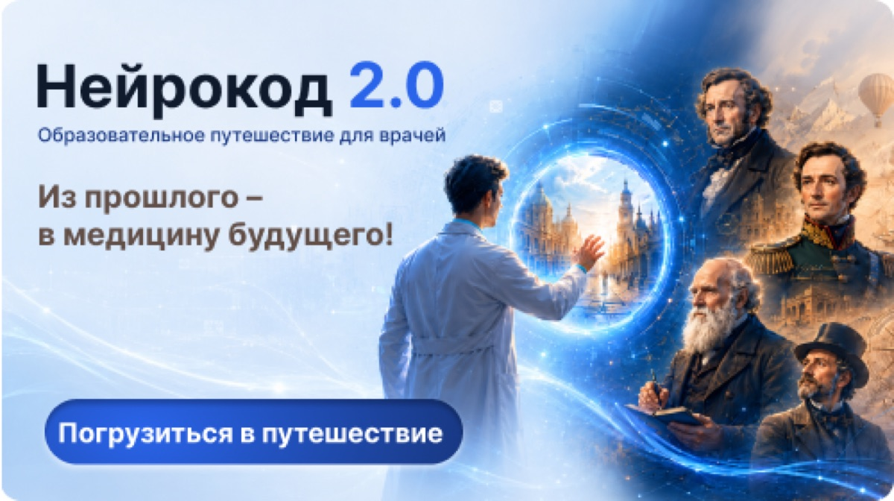
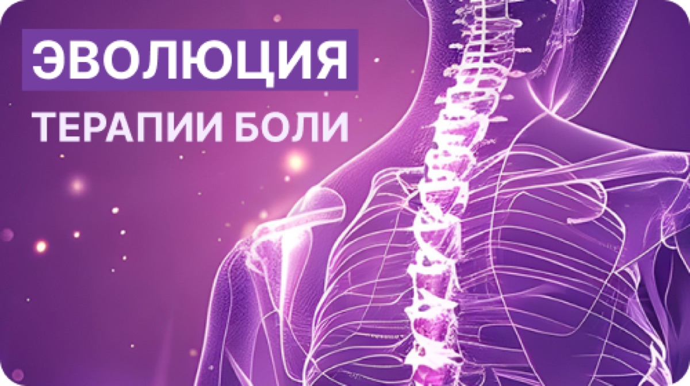
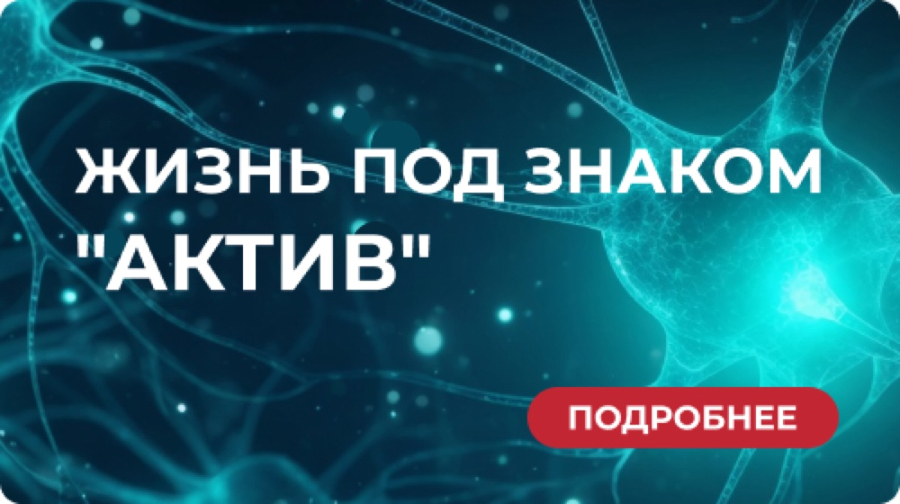
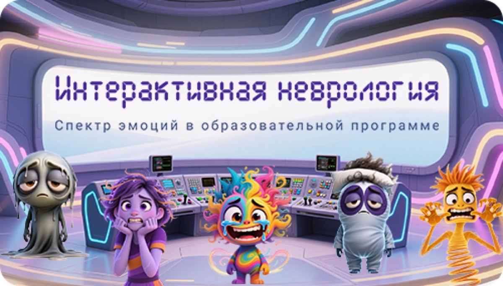
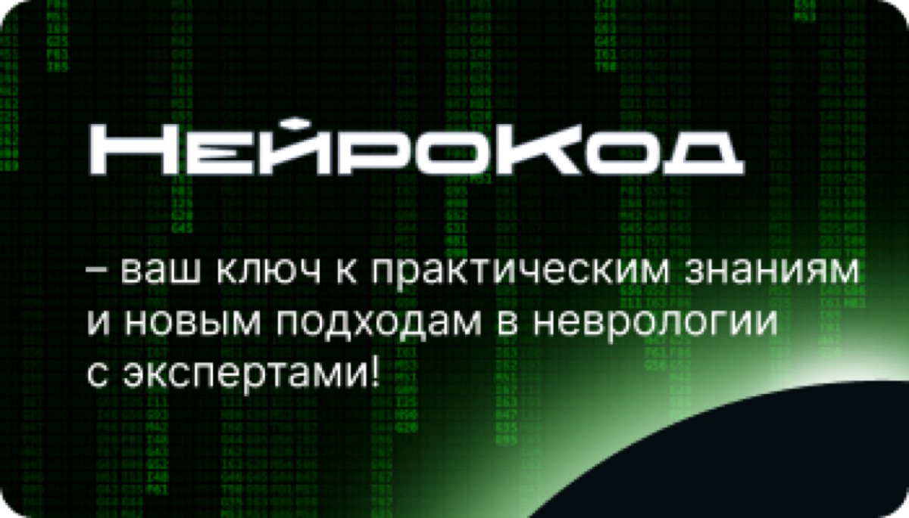

Курсы, клинические квесты и спецпроекты клуба. Проходите в своём темпе и получайте баллы НМО.

Образовательное путешествие для врачей: из прошлого — в медицину будущего

От классических анальгетиков до таргетной терапии: что изменилось в лечении хронической боли

Спецпроект о двигательной активности как терапии при неврологических заболеваниях

Спектр эмоций в образовательной программе: клинический квест с персонажами

Ваш ключ к практическим знаниям и новым подходам в неврологии с экспертами клуба